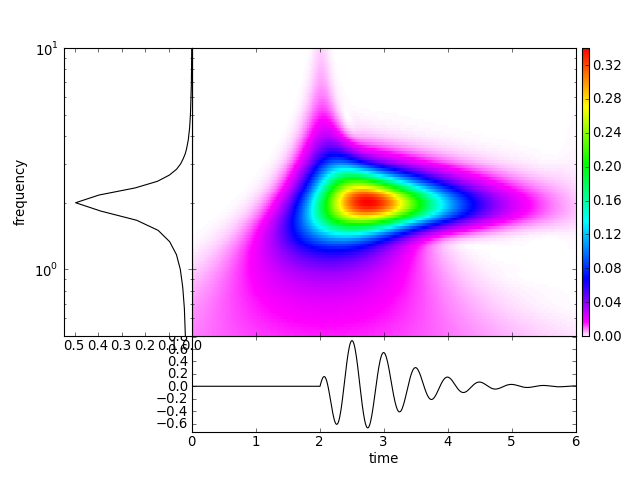
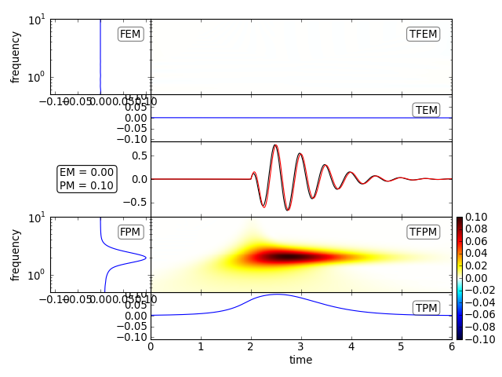
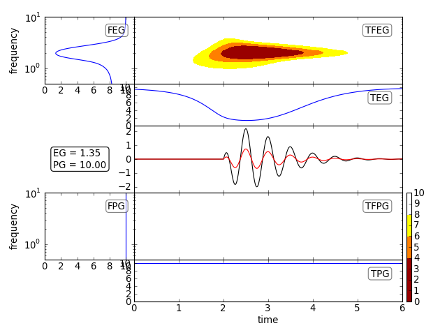
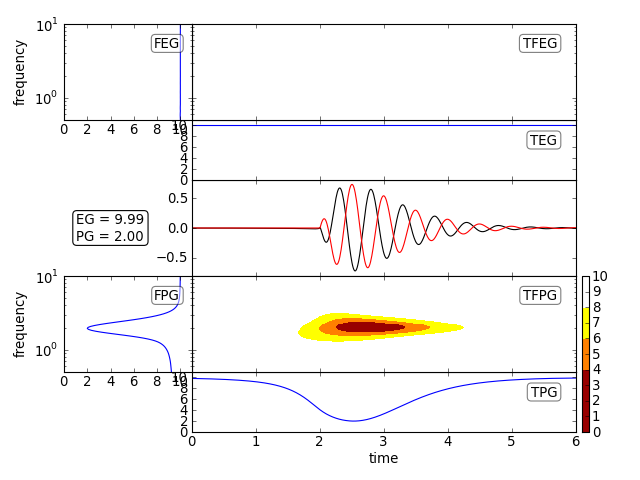
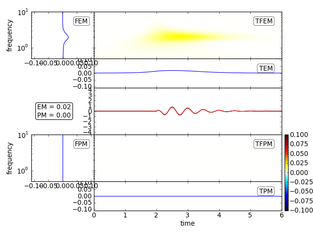
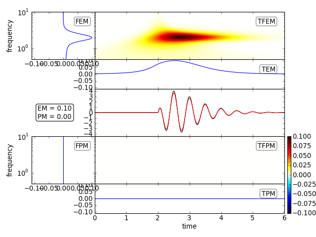
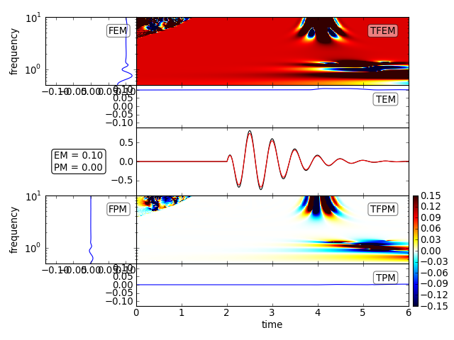

The tf_misfit module offers various Time Frequency Misfit Functions based on [Kristekova2006] and [Kristekova2009].
Here are some examples how to use the included plotting tools:
import numpy as np
from obspy.signal.tf_misfit import plotTfr
# general constants
tmax = 6.
dt = 0.01
npts = int(tmax / dt + 1)
t = np.linspace(0., tmax, npts)
fmin = .5
fmax = 10
# constants for the signal
A1 = 4.
t1 = 2.
f1 = 2.
phi1 = 0.
# generate the signal
H1 = (np.sign(t - t1) + 1) / 2
st1 = A1 * (t - t1) * np.exp(-2 * (t - t1)) * \
np.cos(2. * np.pi * f1 * (t - t1) + phi1 * np.pi) * H1
plotTfr(st1, dt=dt, fmin=fmin, fmax=fmax)
[source code, hires.png, pdf]

Time Frequency Misfits are appropriate for smaller differences of the signals. Continuing the example from above:
from scipy.signal import hilbert
from obspy.signal.tf_misfit import plotTfMisfits
# amplitude and phase error
phase_shift = 0.1
amp_fac = 1.1
# reference signal
st2 = st1.copy()
# generate analytical signal (hilbert transform) and add phase shift
st1p = hilbert(st1)
st1p = np.real(np.abs(st1p) * \
np.exp((np.angle(st1p) + phase_shift * np.pi) * 1j))
# signal with amplitude error
st1a = st1 * amp_fac
plotTfMisfits(st1a, st2, dt=dt, fmin=fmin, fmax=fmax, show=False)
plotTfMisfits(st1p, st2, dt=dt, fmin=fmin, fmax=fmax, show=False)
plt.show()
[source code, hires.png, pdf]
[source code, hires.png, pdf]

Time Frequency GOFs are appropriate for large differences of the signals. Continuing the example from above:
from obspy.signal.tf_misfit import plotTfGofs
# amplitude and phase error
phase_shift = 0.8
amp_fac = 3.
# generate analytical signal (hilbert transform) and add phase shift
st1p = hilbert(st1)
st1p = np.real(np.abs(st1p) * \
np.exp((np.angle(st1p) + phase_shift * np.pi) * 1j))
# signal with amplitude error
st1a = st1 * amp_fac
plotTfGofs(st1a, st2, dt=dt, fmin=fmin, fmax=fmax, show=False)
plotTfGofs(st1p, st2, dt=dt, fmin=fmin, fmax=fmax, show=False)
plt.show()
[source code, hires.png, pdf]

[source code, hires.png, pdf]

For multi component data and global normalization of the misfits, the axes are scaled accordingly. Continuing the example from above:
# amplitude error
amp_fac = 1.1
# reference signals
st2_1 = st1.copy()
st2_2 = st1.copy() * 5.
st2 = np.c_[st2_1, st2_2].T
# signals with amplitude error
st1a = st2 * amp_fac
plotTfMisfits(st1a, st2, dt=dt, fmin=fmin, fmax=fmax)
[source code, hires.png, pdf]

[source code, hires.png, pdf]

Local normalization allows to resolve frequency and time ranges away from the largest ampiltude waves, but tend to produce artifacts in regions where there is no energy at all. In this analytical example e.g. for the high frequencies before the onset of the signal. Manual setting of the limits is thus necessary:
# amplitude and phase error
amp_fac = 1.1
ste = 0.001 * A1 * np.exp(- (10 * (t - 2. * t1)) ** 2) \
# reference signal
st2 = st1.copy()
# signal with amplitude error + small additional pulse aftert 4 seconds
st1a = st1 * amp_fac + ste
plotTfMisfits(st1a, st2, dt=dt, fmin=fmin, fmax=fmax, show=False)
plotTfMisfits(st1a, st2, dt=dt, fmin=fmin, fmax=fmax, norm='local',
clim=0.15, show=False)
plt.show()
[source code, hires.png, pdf]
[source code, hires.png, pdf]
